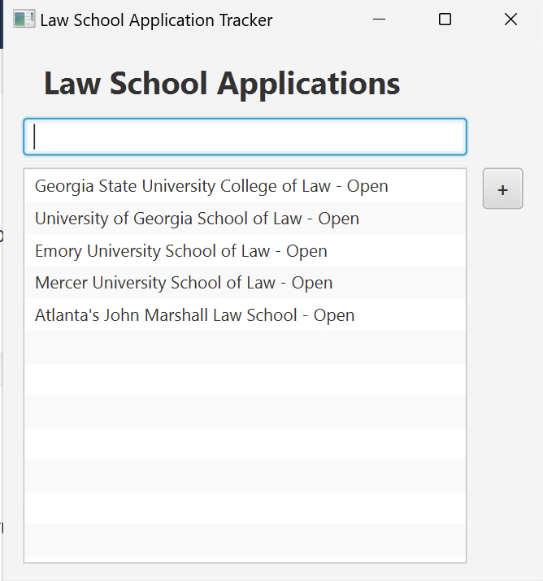

How to Browse Schools
The main application window displays the available law schools and their application status.
- Launch the application using the Quickstart guide.
- Find the school list beneath the “Law School Applications” heading.
- Read through the school names. Scroll within the list if additional schools extend beyond the visible area.
- Click a school’s row to select it.

Available Schools
The current sample list includes:
- Georgia State University College of Law
- University of Georgia School of Law
- Emory University School of Law
- Mercer University School of Law
- Atlanta’s John Marshall Law School